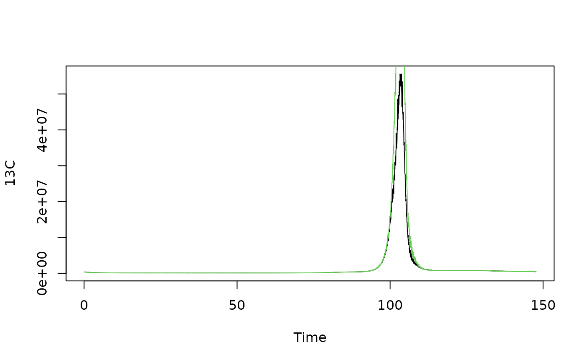

Corrects a numeric values in a data.frame column with respect to a column containing standard values and applies Savitzky-Golay smoothing.
Usage
process_data(
data,
wf = c("ExtCal", "ExtGasCal", "IDMS", "oIDMS"),
c1,
c2 = NULL,
fl = NULL,
amend = FALSE
)Arguments
- data
Data.frame with at least two numeric columns.
- wf
Calibration method/Workflow.
- c1
Column name of the intensity column to be used (ExtCal/ExtGasCal) or of the spike isotope (IDMS/oIDMS).
- c2
Column name of the intensity column to be used as internal standard (ExtCal/ExtGasCal) or of the sample isotope (IDMS/oIDMS).
- fl
Filter length, has to be odd and >= 3.
- amend
Set TRUE to amend transformed columns instead of replacing them. The input of "0" as filter length will omnit the smoothing step.
Examples
imp <- ETVapp::ETVapp_testdata[['ExtGasCal']][['Samples']]
plot(imp[[1]][,c("Time","13C")], type="l")
pro_data <- process_data(imp, c1 = "13C", c2 = "80Se", fl = 5)
head(pro_data[[1]])
#> Time 13C 80Se
#> 1 0.036 317331.8 15218894
#> 2 0.070 325803.0 15305434
#> 3 0.105 326044.5 15357526
#> 4 0.140 308893.3 15853239
#> 5 0.174 320668.9 15378530
#> 6 0.209 314040.2 15242419
lines(pro_data[[1]], col=3)

head(process_data(imp[[1]], c1 = "13C", c2 = "80Se", fl = 9, amend = TRUE))
#> Time 13C 80Se 13C_smooth 80Se_smooth 13C_smooth_scale
#> 1 0.036 357710.0 15218894 257688.1 10745667 323727.3
#> 2 0.070 369347.4 15305434 374318.8 15678097 322304.7
#> 3 0.105 370879.2 15357526 402399.2 16937593 320718.3
#> 4 0.140 362711.1 15853239 355777.6 15043797 319256.3
#> 5 0.174 365263.2 15378530 359844.9 15455705 314300.4
#> 6 0.209 354546.7 15242419 354247.5 15380796 310918.3
head(process_data(imp[[1]], c1 = "13C", c2 = "80Se", amend = TRUE))
#> Time 13C 80Se 13C_scale
#> 1 0.036 357710.0 15218894 317331.8
#> 2 0.070 369347.4 15305434 325803.0
#> 3 0.105 370879.2 15357526 326044.5
#> 4 0.140 362711.1 15853239 308893.3
#> 5 0.174 365263.2 15378530 320668.9
#> 6 0.209 354546.7 15242419 314040.2
# test all error messages
if (FALSE) { # \dontrun{
colnames(imp[[1]])[1] <- "TIME"
head(process_data(imp[[1]], c1 = "122Sn", c2 = "test", fl = 2))
} # }